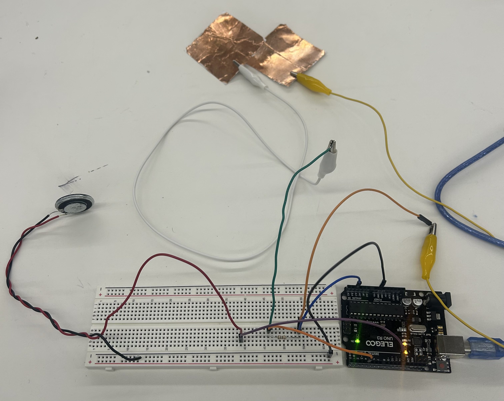
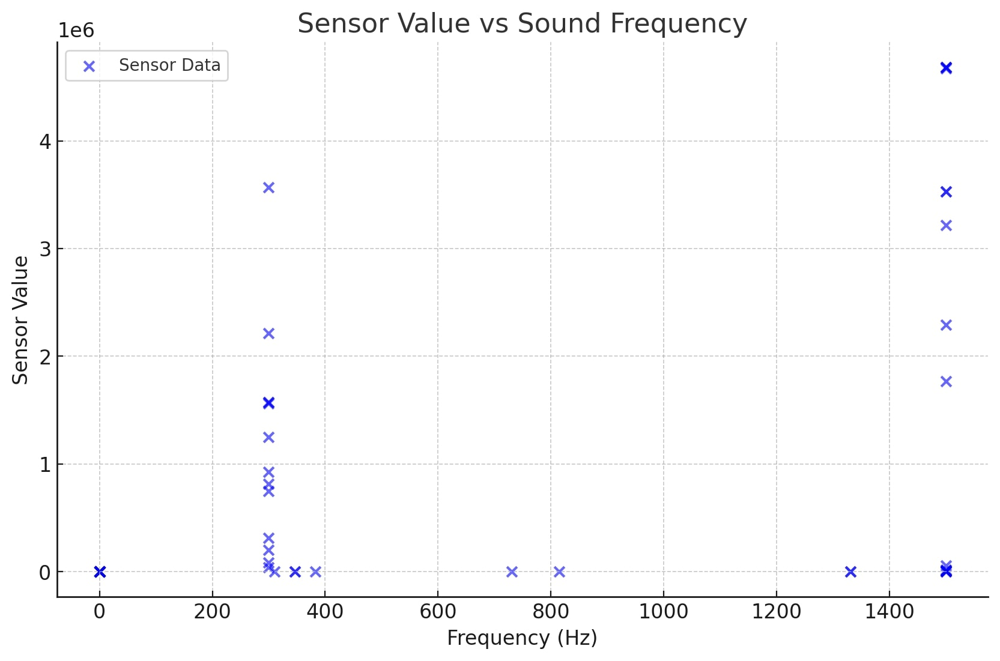
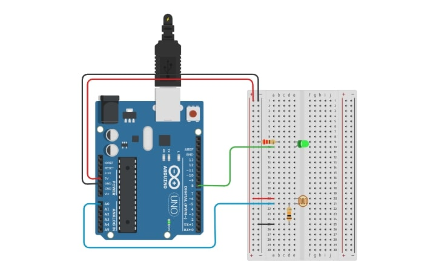
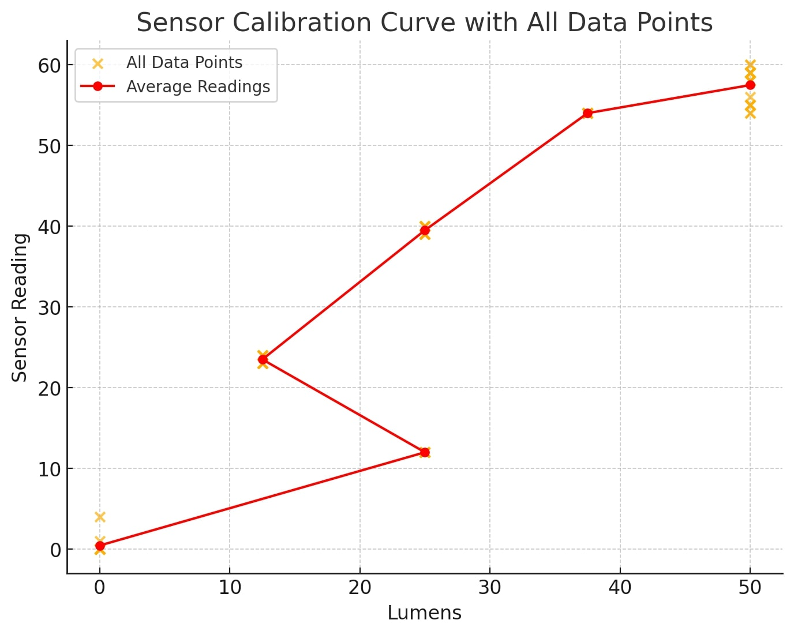

Week 6: Electronic Inputs
Assignment 1: Capactive Sensor
This week, we were tasked with making a capacitive sensor to measure a physical quantity with a microcontroller. I thought it’d be cool to integrate my capacitive sensor with a piezo buzzer so that when the coils touched, it would play audio (e.g. a beep).
To create the capacitive sensor, I relied on the instructions in the PS 70 webpage, and learned that I had to connect one of the coils to pin A3 and the other to digital pin 4 on the microcontroller. To integrate the buzzer in, I relied on wiring directions from this instructable). In the end, my circuit looked like this:
After uploading my first attempt at code, I realized that when I touched the coils, no audio was outputting. To troubleshoot, I figured out I should debug the audio and the capacitive sensor separately. I ran this code to debug the audio:
The audio was playing. Great! That was not the problem.
Then I uploaded this code to debug the capacitive sensor. The readings were all 0. Something was wrong.
I removed the resistor and uploaded this new integrated code:
It worked!
Here is a video:
I then updated the code to change the frequency the longer the coils were pressed:
Finally, I modified the code, setting different thresholds based off of the serial value monitors, so that the audio played a certain frequency when the coils were in closer proximity to each other and a different frequency when they touched:
Next, I moved on to thinking about calibration. The two clear values to map were the sound frequencies from the buzzer and the values being outputted on the serial monitor from the capacitive sensor. I thought it would be interesting to map what happens to the sound frequencies as I change the proximity of the copper coils. I uploaded this code to output both values onto my serial monitor to test this:
The results of this experimentation yielded the following graph:
The graph reflects the influence of the proximity of the coils in the circuit on the sensor's output. When the coils are closer together, the mutual inductance increases, resulting in stronger signals being generated in the circuit. This enhanced coupling often corresponds to higher frequencies, as seen in the larger sensor values at elevated frequencies. The nonlinearity in the graph happens because the circuit responds unevenly to changes in frequency or proximity, likely due to how the components interact, how sensitive the sensor is at different frequencies, and limits in how much signal it can handle.
Assignment 2: [Use + Calibrate Another Sensor]
Input Sensor: Phototransistor
I really wanted to learn how to program a phototransistor today. A phototransistor’s output values depend on how much light hits its face. In general, resistance goes down as light levels increase and go up as light levels decrease. Arduinos measure voltage. This means that as light increases, voltage goes up and as light decreases, voltage goes down. Since phototransistors respond to light, I figured that an LED would be the perfect output device. When the phototransistor goes dark, the LED will light up!
Here is the schematic for my circuit:
The phototransistor gets 5V from the Arduino’s power supply and then is connected to a resistor which connects to ground. We are measuring the voltage on that pin using the arduino analog input A0. This forms a voltage divider circuit.
This was what my circuit looked like fully constructed:

I then tried uploading some code and my circuit was not working. I tried switching out the resistors for different values and it still wasn’t working. Then I realized that the threshold I was setting (500) was way too high. I looked at the values on the serial monitor and realized that when I covered the phototransistor, the value was around 1 (see, it is true that voltage goes down when it gets darker) and hovered around 8-10 in ambient lighting.
Here is the finalized code:
And a video demo of the sensor functioning with the output LED:
Then it was time to calibrate!
To begin recording data points on the serial monitor, I modified the code to just collect data from the serial monitor. The serial monitor displays data received through the serial communication protocol, represented by digital values, that correspond to voltage levels on microcontroller pins.
My plan to compare the data I was getting to real world values was to use the iPhone flashlight. There is a setting on the iPhone for you to adjust the brightness level of the flashlight and there are four different levels.
My idea was to track the serial monitor values outputted by the phototransistor in ambient light, complete darkness, and for these four iPhone flashlight levels. Apple does not make publicly available the brightness of each individual flashlight level but it does state that the maximum brightness is 50 lumens. Thus, I calibrated the data accordingly:
The relationship between the sensor readings and the real-life brightness levels (measured in lumens) appears to be non-linear, with diminishing returns in sensor output as the light intensity increases. The data also suggests some sort of saturation effect at higher brightness as the readings started increasing less steeply between the third and fourth flashlight levels.